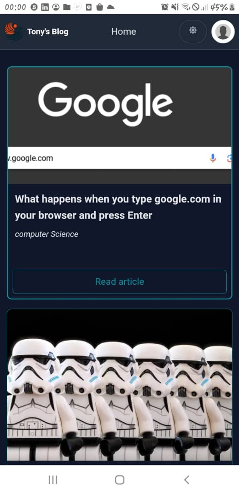

📚 Welcome to Tony's Blog! 🌟 Discover a world of captivating articles and endless inspiration. Sign up now to unlock a universe of knowledge!
you can follow me


📚 Welcome to Tony's Blog! 🌟 Discover a world of captivating articles and endless inspiration. Sign up now to unlock a universe of knowledge!
you can follow me
Get To Know More

1 year
Full stack

B.sc Bachelors Degree
M.sc Master Degree
The journey of our project began with a simple yet profound inspiration: the power of storytelling. As a participant in the Alx program, I was deeply moved by the courage and creativity of individuals who shared their daily journeys through writing. Witnessing this ignited a flame within me, sparking a newfound passion for storytelling and self-expression. Driven by this inspiration, I embarked on a mission to create a platform where individuals could share their stories, experiences, and insights with the world. Thus, the idea of a blog post website was born. This project is not merely a requirement for Holberton School; it is a manifestation of personal growth and aspiration. It symbolizes the journey from inspiration to creation, fueled by the desire to connect, inspire, and empower others through the written word.